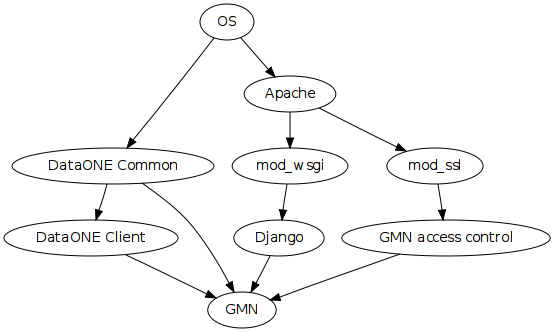

GMN setup overview¶
Setting up the DataONE Generic Member Node (GMN).
DataONE GMN is a web app implemented in Python based on the Django web app framework. Django is a WSGI compliant application. It is served by Apache via mod_wsgi. The DataONE infrastructure uses SSL and X.509 certificates for security and certificate validation is handled for GMN by mod_ssl.

This procedure has been verified on Ubuntu 10.04 LTS (Server and Desktop). Additional notes and instructions are available for CentOS.
It may be possible to deploy GMN using a different stack, such as one based on nginx and uWSGI. Such setups are currently untested, but if they are attempted and prove to have benefits, please let us know.
The GMN setup process has been broken down into a series of steps. Perform the steps in order to set up a working instance of GMN.
Along with the steps, some background information is provided. The actual steps that need to be performed are indented to separate them from the background information.
Authorization and authentication in DataONE is based on X.509 certificates. To set up a working instance of GMN, certificates must be obtained both from DataONE and from a publicly trusted certificate authority. Procedures for this are included.
Commands that need to be run from the shell are prefixed with “$”.
The instructions describe an installation into subfolders of /var/local/dataone/. To install into another location, all related paths must be adjusted accordingly.
The instructions describe how to set GMN up to run in a separate Apache Virtual Host on a fresh install of Ubuntu. General setup and configuration issues, such as issues that may be encountered when adding GMN to an existing server, are not covered.
The GMN software stack is installed into a Python virtual environment to avoid potential conflicts with other Python software on the server.
Use the Next link in the sidebar to get to the next page of steps after completing the current page.
- Hardware requirements and configuration
- Install the GMN software stack
- Select a DataONE environment
- Install the server side certificate
- Install the DataONE client side certificate
- Install CILogon and DataONE root CA certificates
- Install and configure Apache
- Install and configure PostgreSQL
- Register the new Member Node with DataONE
- Select the DataONE Tier
- Configure the GMN Asynchronous Processes
- Final configuration and startup
- Installing on CentOS 5.5
- Resources
- Integration testing using certificates